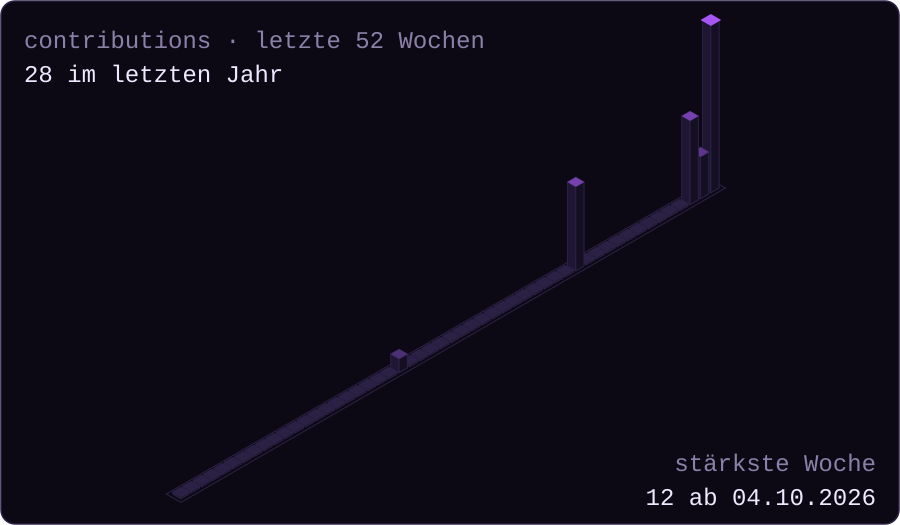
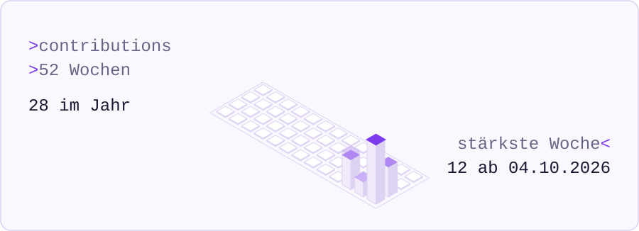

Profil-Assets – Vorschau
footer
dark · 900px
dark · 400px
light · 900px
light · 400px
auto (System-Theme) · 900pxauto (System-Theme) · 400px
hero
dark · 900pxdark · 400px
light · 900pxlight · 400px
auto (System-Theme) · 900pxauto (System-Theme) · 400px
skyline
dark · 900px
dark · 400px
light · 900px
light · 400px
auto (System-Theme) · 900pxauto (System-Theme) · 400px
stack
dark · 900pxdark · 400px
light · 900pxlight · 400px
auto (System-Theme) · 900pxauto (System-Theme) · 400px